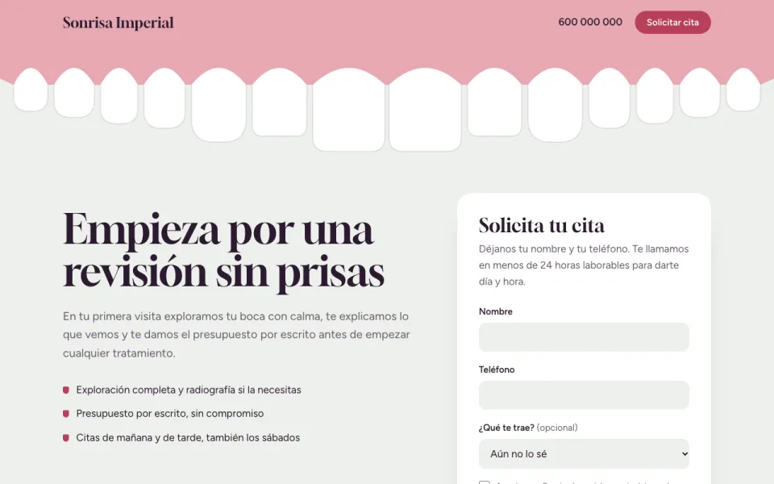
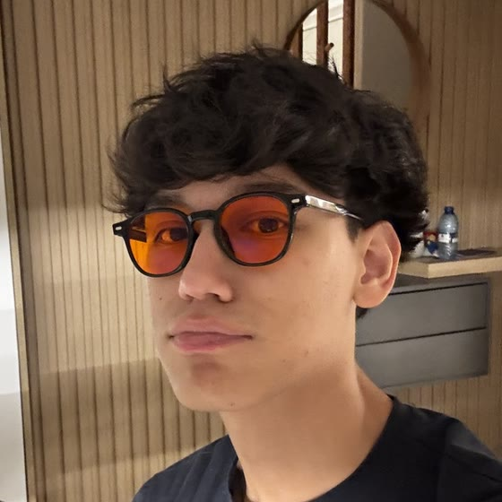

Sonrisa Imperial
Landing page para una clínica dental ficticia con un solo objetivo: que quien entre pida cita. Formulario de dos campos obligatorios, pensada primero para móvil y hecha en un único fichero HTML.
Aprendo inteligencia artificial para ayudar a startups e infoproductores a dar vida a sus proyectos.
Ponte en contacto conmigo
Soy de València y estudio 1º de DAM en el IES Dr. Lluís Simarro. Me enganché a la inteligencia artificial al ver que hace en mucho menos tiempo, y a menudo mejor, muchas de las tareas de nuestro día a día en el trabajo.
Quiero descubrir hasta dónde llega para delegarle todo lo automatizable y que las personas nos centremos en crear y ser originales, que es justo lo que la IA no sabe hacer. Me gustaría ayudar a construir un mundo en el que nos dediquemos a lo que nos gusta y la IA haga el trabajo aburrido.

Landing page para una clínica dental ficticia con un solo objetivo: que quien entre pida cita. Formulario de dos campos obligatorios, pensada primero para móvil y hecha en un único fichero HTML.
C1 Advanced de Cambridge English. Es el idioma en el que se publica casi todo sobre IA.
Desarrollo de Aplicaciones Multiplataforma en el IES Dr. Lluís Simarro, curso 2026-2027.
Dos años jugando como aficionado con mis amigos.
Mis tres favoritos: Zelda: Breath of the Wild, Bloodborne y Pokémon.
Naruto Shippuden y JoJo's Bizarre Adventure.
Usar la tecnología para sacar el máximo partido a nuestro cuerpo según lo que buscas: dormir mejor, recuperarte antes, tener más energía.